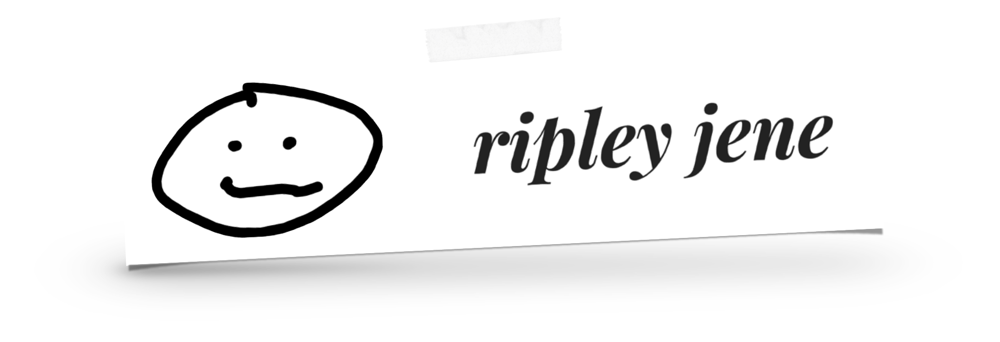

2000s
Machines + repair
Early technology work developed a practical instinct for systems, access, and making tools behave.
A stop along the way
researcher + creativehi, i’m ripley, media psychologist, multimedia artist, and creative technologist investigating the human signal.
a map thru time…
Same curious human. A few different ways of getting here. Choose a stop, or let the scroll take you there.
Scroll to drive, sail, take flight, and find the next horizon.
2000s
Early technology work developed a practical instinct for systems, access, and making tools behave.
A stop along the wayTake any detour. Open a milestone for its story.
Early technology work developed a practical instinct for systems, access, and making tools behave.
Audio engineering, performance, post-production, and teaching made communication feel physical, social, and alive.
Immersive media, AR/VR experimentation, and AI product operations opened a bigger question about how technology changes human interactions.
Books, podcasts, oracle cards, livestreams, exhibitions, and mentoring turned process itself into material worth sharing.
In Psychology, Media & Technology at Fielding University: building a careful research practice around mediated communication, expression, and listener inference.
Exploring how observable behavior and careful evidence can inform questions about human–AI communication. A direction for future work, not a completed milestone.
one live question
Current work centers listener inference and observable audiovisual cues, with careful measurement before automated labels. It is a behavioral way into multimodal AI questions—not a claim to read minds.
also made by ripley
Books, decks, writing, and video—each opens on its own terms.
A V1 tech-UX case study in making FFmpeg easier to approach: guided, reviewable commands for common media tasks, plus bulk processing and browser-local history. Its helper uses keyword matching and presets, not a hosted AI model.
explore the open-source app ↗A playful pixel-art salad kitchen: build and arrange a bowl, rotate it, and turn your creation into a printable recipe ticket. Save recipes locally or share them with a link.
try the salad kitchen ↗A book-shaped companion for the creative process.
read the announcement ↗Mantras, affirmations, a book, and an oracle deck.
visit the project ↗Writing about life, psychology, creativity, and figuring things out in public.
read on Substack ↗Creative process, experiments, and videos made to encourage making.
watch videos ↗From process to progress, conversations about the creative process.
listen to the podcast ↗